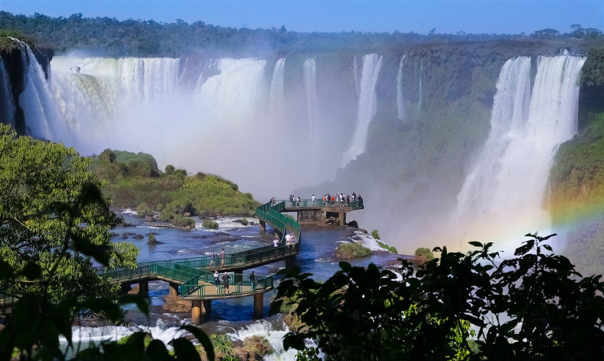
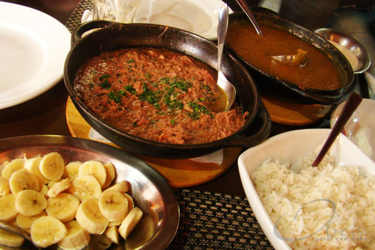

Uma das curiosidades sobre o Paraná, é que boa parte do estado, foi território espanhol. O Tratado de Tordesilhas, celebrado entre Portugal e Espanha, colocava o atual território paranaense como sendo espanhol. Ao norte do município de Fênix (a cerca de 412 km de Curitiba), existem ruínas da segunda fundação da Villa Rica del Espiritu Santo. Foi fundado pelos jesuítas, com o intuito de catequizar os índios. O local encontra-se aberto para turistas e conta com um museu que reúne objetos encontrados.

Cidade espanhola

Foz do Iguaçu
Foz do Iguaçu é a única cidade brasileira da Tríplice Fronteira, então viajando para Foz, você possui 3 destinos garantidos.Pois possui fronteira com Paraguai e Argentina, um passeio incrível, é o Marco das Três Fronteiras, lá você pode ver os 3 países de uma vez!!Foz do Iguaçu, com 275 quedas-d’água e 80 metros de altura, é conhecida internacionalmente por receber milhares de turistas cada ano, as Cataratas do Iguaçu.

Barreado
O barreado é um prato típico do litoral paranaense, e é uma delícia mesmo!! Sua origem é açoriana de um ritual de 300 anos.Sendo preparado com carne, que é colocada em uma panela de barro fechada e enterrada, e então uma fogueira é acesa por cima e queima por 12 horas até que a carne se desfaça. Chega a dar água na boca!